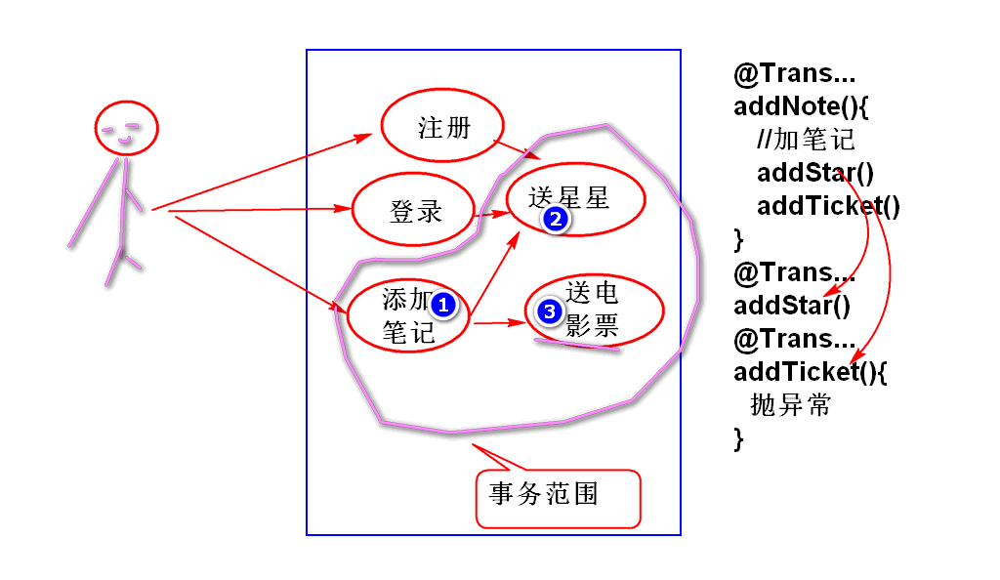

对于单纯读取数据库操作, 可以设置readOnly=true, 可以提高数据的放效率.
@Transactional(readOnly=true)
public List<Map<String, Object>> listNotesInTrashBin(
String userId) throws UserNotFoundException {
业务过程重构时候需要业务方法调用业务方法, 这样就需要一个业务方法的事务传播到另外一个业务方法中, 整合为一个事务.
案例:

步骤:
创建数据表:
create table cn_star (
cn_star_id varchar(50),
cn_user_id varchar(50),
cn_stars int,
primary key(cn_star_id)
);
声明 StarsDao
public interface StarsDao {
Stars findStarsByUserId(String userId);
int insertStars(Stars stars);
int updateStars(Stars stars);
}
声明SQL StarsMapper.xml
<mapper namespace="cn.tedu.note.dao.StarsDao">
<select id="findStarsByUserId"
parameterType="string"
resultType="cn.tedu.note.entity.Stars">
select
cn_star_id as id,
cn_user_id as userId,
cn_stars as stars
from
cn_star
where
cn_user_id = #{userId}
</select>
<insert id="insertStars"
parameterType="cn.tedu.note.entity.Stars">
insert into cn_star(
cn_star_id,
cn_user_id,
cn_stars
)values(
#{id},
#{userId},
#{stars}
)
</insert>
<update id="updateStars"
parameterType="cn.tedu.note.entity.Stars">
update cn_star
set
cn_stars = #{stars}
where
cn_user_id=#{userId} or
cn_star_id=#{id}
</update>
</mapper>
声明业务层接口方法 NoteService
boolean addStars(String userId, int stars)
throws UserNotFoundException;
实现方法 NoteServiceImpl
@Transactional
public boolean addStars(String userId, int stars)
throws UserNotFoundException {
if(userId==null||userId.trim().isEmpty()){
throw new UserNotFoundException("ID空");
}
User user=userDao.findUserById(userId);
if(user==null){
throw new UserNotFoundException("木有人");
}
//检查是否已经有星了
Stars st=starsDao.findStarsByUserId(userId);
if(st==null){//如果没有星星
String id = UUID.randomUUID().toString();
st = new Stars(id, userId, stars);
int n = starsDao.insertStars(st);
if(n!=1){
throw new RuntimeException("失败");
}
}else{//如果有星星,就在现有星星数量上增加
int n = st.getStars()+stars;
if(n<0){
// n = 0;
throw new RuntimeException("扣分太多!");
}
st.setStars(n);
n = starsDao.updateStars(st);
if(n!=1){
throw new RuntimeException("失败");
}
}
return true;
}
测试: NoteServiceTest
@Test
public void testAddStars(){
String userId="03590914-a934-4da9-ba4d-b41799f917d1";
boolean b = service.addStars(userId, 5);
System.out.println(b);
b = service.addStars(userId, 6);
System.out.println(b);
}
重构 addNote方法, 实现添加笔记时候送星星功能, 进而实现事务的传播:
@Transactional
public Note addNote(String userId,
String notebookId, String title)
throws UserNotFoundException,
NotebookNotFoundException {
if(userId==null||userId.trim().isEmpty()){
throw new UserNotFoundException("ID空");
}
User user=userDao.findUserById(userId);
if(user==null){
throw new UserNotFoundException("木有人");
}
if(notebookId==null||notebookId.trim().isEmpty()){
throw new NotebookNotFoundException("ID空");
}
int n=notebookDao.countNotebookById(notebookId);
if(n!=1){
throw new NotebookNotFoundException("没有笔记本");
}
if(title==null || title.trim().isEmpty()){
title="葵花宝典";
}
String id = UUID.randomUUID().toString();
String statusId = "1";
String typeId = "1";
String body = "";
long time=System.currentTimeMillis();
Note note = new Note(id, notebookId,
userId, statusId, typeId, title,
body, time, time);
n = noteDao.addNote(note);
if(n!=1){
throw new NoteNotFoundException("保存失败");
}
//当前的事务, 会传播到 addStart方法中
//整合为一个事务!
addStars(userId, 5);
return note;
}
测试...
重点掌握 Propagation.REQUIRED
一共有4种, 一般采用 @Transactional(isolation=Isolation.READ_COMMITTED) 级别, 是并发性能和安全性折中的选择. 是大多数软件项目采用的隔离级别.
就是所有业务方法使用@Transactional, 如果是只读方法, 建议增加readOnly=true
面试题目:
Spring 声明式事务是如何实现的?
答案: 利用AOP技术实现.
http://doc.tedu.cn/rfc/rfc2616.txt
根据HTTP1.1协议, 知道服务器向客户端传输数据如下:
HTTP/1.1 200 OK
Content-Type: image/png
Content-Length: 130
数据内容
安装这个规则, 可以利用Servlet向客户端发送自定义图片:
声明Servlet
public class ImageServlet extends HttpServlet {
private static final long serialVersionUID = 1L;
protected void doGet(
HttpServletRequest request,
HttpServletResponse response)
throws ServletException, IOException {
//发送照片
byte[] png = createPng();
response.setContentType("image/png");
response.setContentLength(png.length);
//在消息body中发送消息数据
response.getOutputStream().write(png);
}
/**
* 创建一个图片, 并且编码为 png 格式, 返回
* 编码以后的数据
*/
private byte[] createPng() throws IOException{
BufferedImage img =
new BufferedImage(200, 80,
BufferedImage.TYPE_3BYTE_BGR);
//在图片上绘制内容
img.setRGB(100, 40, 0xffffff);
//将图片编码为PNG
ByteArrayOutputStream out =
new ByteArrayOutputStream();
ImageIO.write(img, "png", out);
out.close();
byte[] png = out.toByteArray();
return png;
}
}
配置Servlet
<servlet>
<description></description>
<display-name>ImageServlet</display-name>
<servlet-name>ImageServlet</servlet-name>
<servlet-class>cn.tedu.note.web.ImageServlet</servlet-class>
</servlet>
<servlet-mapping>
<servlet-name>ImageServlet</servlet-name>
<url-pattern>/demoimg</url-pattern>
</servlet-mapping>
测试
http://localhost:8080/note/demoimg
显示生产的图片
在网页中显示图片:
<h1>自定义图片</h1>
<p>
Servlet 处理自定义图片
<img alt="" src="demoimg">
</p>
利用Spring MVC也可以动态生产图片:
添加控制器方法 UserController
/*
* @ResponseBody 注解会自动处理控制返回值
* 1. 如果是JavaBean(数组,集合) 返回JSON
* 2. 如果是byte数字, 则将byte数组直接装入
* 响应消息的body
*/
//produces="image/png"用于设置 content-type
@RequestMapping(value="/image.do",
produces="image/png")
@ResponseBody
public byte[] image() throws Exception{
return createPng();
}
/**
* 创建一个图片, 并且编码为 png 格式, 返回
* 编码以后的数据
*/
private byte[] createPng() throws IOException{
BufferedImage img =
new BufferedImage(200, 80,
BufferedImage.TYPE_3BYTE_BGR);
//在图片上绘制内容
img.setRGB(100, 40, 0xffffff);
//将图片编码为PNG
ByteArrayOutputStream out =
new ByteArrayOutputStream();
ImageIO.write(img, "png", out);
out.close();
byte[] png = out.toByteArray();
return png;
}
在页面中显示图片:
<p>
Spring MVC 处理自定义图片
<img alt="" src="user/image.do">
</p>
根据RFC 2616 的 19.5.1 章节内容, 设置HTTP协议头, 就可以实现图片下载保存功能:
Content-Type: application/octet-stream
Content-Disposition: attachment; filename="fname.ext"
声明控制器方法 UserController
@RequestMapping(value="/downloadimg.do",
produces="application/octet-stream")
@ResponseBody
public byte[] downloadimg(
HttpServletResponse res)
throws IOException{
//参考: 19.5.1 Content-Disposition
//Content-Disposition: attachment; filename="fname.ext"
res.setHeader("Content-Disposition",
"attachment; filename=\"demo.png\"");
return createPng();
}
网页上设置下载链接
<h1>下载图片</h1>
<a href="user/downloadimg.do">图片</a>
Excel 文件的下载: 与下载图片一样, 只需要更换API生产文件数据就可以实现下载功能了.
导入POI API, 用于处理Excel文件
<dependency>
<groupId>org.apache.poi</groupId>
<artifactId>poi</artifactId>
<version>3.13</version>
</dependency>
利用POI生成Excel文件数据:
private byte[] createExcel()
throws IOException{
//创建工作簿
HSSFWorkbook workbook=new HSSFWorkbook();
//创建工作表
HSSFSheet sheet=
workbook.createSheet("Demo");
//在工作表中创建数据行
HSSFRow row = sheet.createRow(0);
//创建行中的格子
HSSFCell cell = row.createCell(0);
cell.setCellValue("Hello World!");
//将Excel文件保存为 byte 数组
ByteArrayOutputStream out =
new ByteArrayOutputStream();
workbook.write(out);
out.close();
return out.toByteArray();
}
利用Spring MVC控制器下载Excel:
@RequestMapping(value="/excel.do",
produces="application/octet-stream")
@ResponseBody
public byte[] excel(
HttpServletResponse res)
throws IOException{
//参考: 19.5.1 Content-Disposition
res.setHeader("Content-Disposition",
"attachment; filename=\"demo.xls\"");
return createExcel();
}
在网页上连接下载控制器:
<h1>下载Excel</h1>
<a href="user/excel.do">Excel 文件</a>
上载文件协议 http://doc.tedu.cn/rfc-cn/RFC1867.txt
文件上载:
<h1>文件上载</h1>
<FORM ENCTYPE="multipart/form-data"
ACTION="user/upload.do" METHOD="POST">
File to process:<br>
<INPUT NAME="userfile1" TYPE="file"><br>
<INPUT NAME="userfile2" TYPE="file"><br>
<INPUT TYPE="submit" VALUE="Send File">
</FORM>
导入 上载组件:
<dependency>
<groupId>commons-fileupload</groupId>
<artifactId>commons-fileupload</artifactId>
<version>1.3.2</version>
</dependency>
配置上载解析器 spring-mvc.xml
<bean id="multipartResolver"
class="org.springframework.web.multipart.commons.CommonsMultipartResolver">
<!-- one of the properties available; the maximum file size in bytes -->
<property name="maxUploadSize"
value="10000000"/>
<property name="defaultEncoding"
value="UTF-8"/>
</bean>
开发控制器:
@RequestMapping("/upload.do")
@ResponseBody
public JsonResult upload(
MultipartFile userfile1,
MultipartFile userfile2) throws Exception{
//Spring MVC 中可以利用 MultipartFile
//接收 上载的文件! 文件中的一切数据
//都可以从 MultipartFile 对象中找到
//获取上再是原始文件名
String file1 =
userfile1.getOriginalFilename();
String file2 =
userfile2.getOriginalFilename();
System.out.println(file1);
System.out.println(file2);
//保存文件的3种方法:
//1. transferTo(目标文件)
// 将文件直接保存到目标文件, 可以处理大文件
//2. userfile1.getBytes() 获取文件的全部数据
// 将文件全部读取到内存, 适合处理小文件!!
//3. userfile1.getInputStream()
// 获取上载文件的流, 适合处理大文件
//保存的目标文件夹: /home/soft01/demo
File dir = new File("D:/demo");
dir.mkdir();
File f1 = new File(dir, file1);
File f2 = new File(dir, file2);
//第一种保存文件
//userfile1.transferTo(f1);
//userfile2.transferTo(f2);
//第三种 利用流复制数据
InputStream in1 = userfile1.getInputStream();
FileOutputStream out1 =
new FileOutputStream(f1);
int b;
while((b=in1.read())!=-1){
out1.write(b);
}
in1.close();
out1.close();
InputStream in2 = userfile2.getInputStream();
FileOutputStream out2=
new FileOutputStream(f2);
byte[] buf= new byte[8*1024];
int n;
while((n=in2.read(buf))!=-1){
out2.write(buf, 0, n);
}
in2.close();
out2.close();
return new JsonResult(true);
}
测试